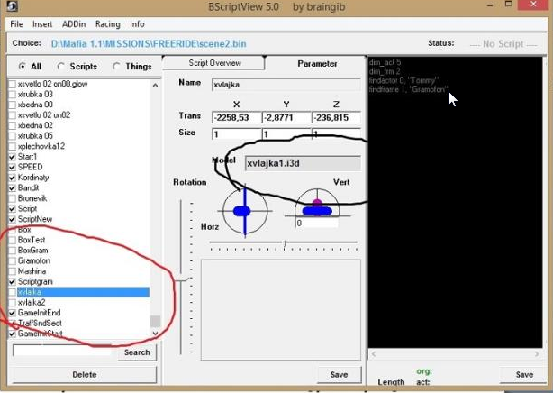
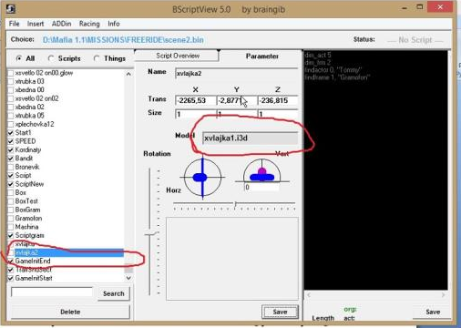

Все наверно видели красивый, развивающийся на ветру флаг в 10 и 14 миссиях. Так как же сделать такой же у себя?
Имея какой- никакой опыт многие просто брали модель флага и создавали в БСВ флаг, однако он был совершенно обычным,
не «порхал» на ветру. Что бы все получилось как следует, нужно сделать еще несколько важных действий.
Что бы во всем разобраться, следует залезть в файл scene.bin в 10 миссии и посмотреть что там.
Мы находим 2 актора с нужными нам моделями флагов- xvlajka1.i3d. Имена этих акторов xvlajka и xvlajka2. Все это запоминаем.
Теперь открываем scene.bin нужной нам миссии и вставляем, куда нам нужно 2 флага с точно такими же названиями ( иначе потом работать не будет)
1 флаг- xvlajka и модель xvlajka1.i3d
2 флаг xvlajka2 и модель xvlajka1.i3d


Если вам не нужен 2 флаг, просто уберите его в другой конец карты, его там никто не найдет.)
Практически все! Остается сделать решающий шаг. Заходим в папку MISSIONS- MISE10-LETISTE и копируем оттуда файл rmorf.bin.
Готово! Можем заходить в игру и любоваться красивым флагом, развивающимся на ветру.